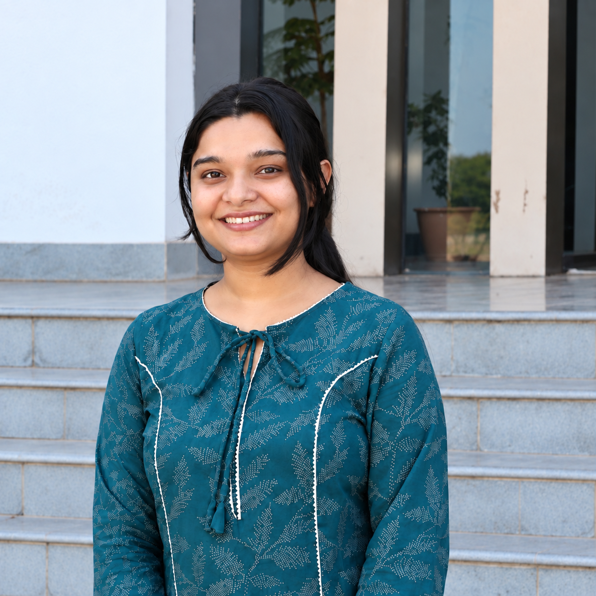

Adaptability
Adjusting to changing hiring needs and day-to-day HR tasks.
↗Kiran Sharma · HR Intern at AllSure · Pursuing an MBA in Human Resource Management.

I’m building HR experience at AllSure while pursuing an MBA in Human Resource Management.
I’m Kiran Sharma, an HR Intern at AllSure. After a B.Sc in Biotechnology and an M.Sc in Applied Microbiology and Biotechnology, I’m pursuing an MBA in HR while building practical experience in recruitment coordination, onboarding and HR operations.
Five strengths that support my work and continued learning in HR.
Adjusting to changing hiring needs and day-to-day HR tasks.
↗Pursuing an MBA in HR while building practical experience at AllSure.
↗Approaching candidate and employee interactions with consideration.
↗Handling confidential HR documents and employee records responsibly.
↗Supporting accurate joining documentation, records and HR reports.
↗Supporting recruitment coordination, onboarding and HR operations since January 2025.
AllSure
Supporting candidate sourcing, screening, interview coordination, onboarding and HR records.
HR Intern supporting candidate sourcing, profile screening, shortlisting and interview coordination, alongside onboarding and day-to-day HR operations.
Identify and source relevant candidates for open roles.
Practical responsibilities across hiring, onboarding and people support.
Conceptual workflows and learning exercises related to recruitment, onboarding and HR reporting.
Qualifications completed and currently in progress.
Symbiosis International University
Banasthali University, Jaipur
Banasthali University
Open to opportunities in Talent Acquisition, Recruitment and HR Operations.